Lesson109–110 本地验收证据
小禾与欧阳小禾同学是虚构测试账号，不是体验同学的成果。本地检查不替代教师审阅、儿童体验、真机微信保存或实体打印。量图为另设配方与同单位比较任务；原文牛奶没有精确茶匙数。
设计与验收 · 结果摘要 · 全部帧检查
开场只有原文问题与人物地点，双方空手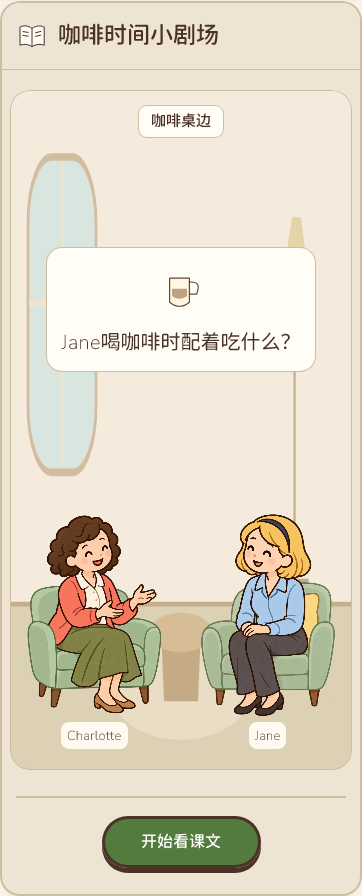
糖一勺半，保留完整原文与按需中文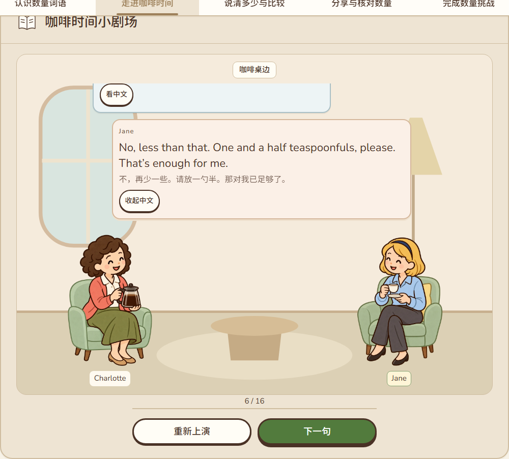
Charlotte仍是猜测，空盒尚未提前出现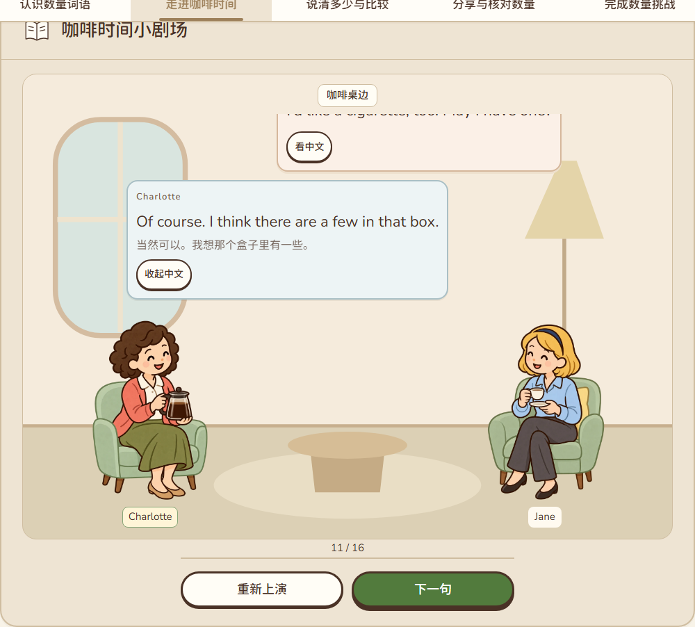
Jane报告空盒后才切换完整持盒姿态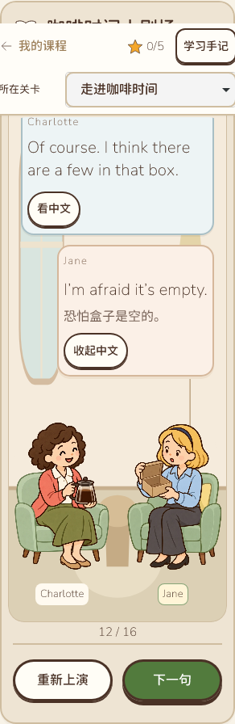
第15轮递饼干，人物台词不扩写为长期结果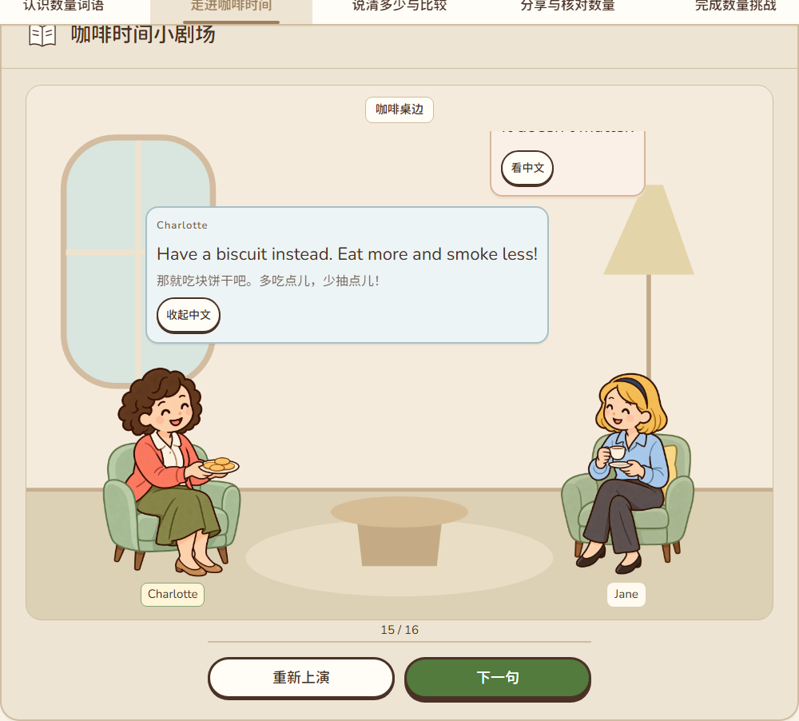
much／many，相关两空必须填齐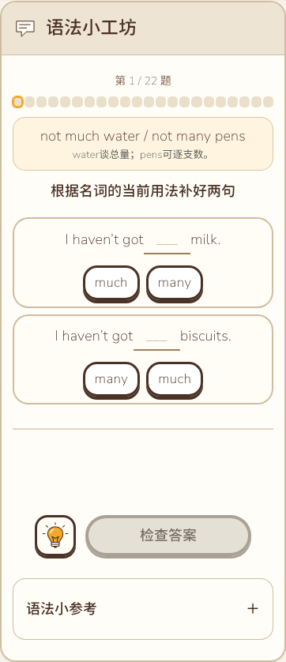
only a few／only a little与名词类型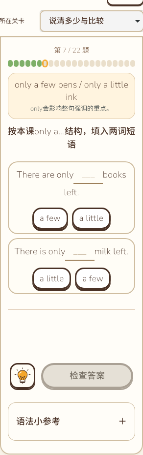
数量与实际需要分别给明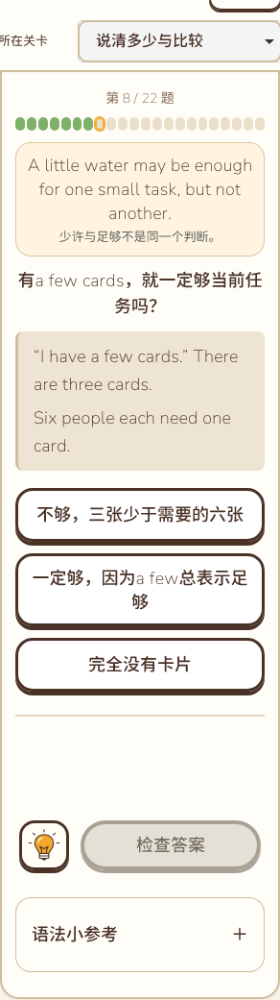
同一起点距离与两组合法形式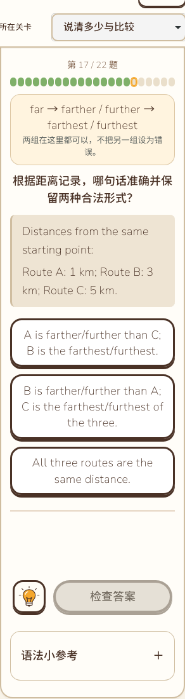
撤去示范后按完整距离资料组织句子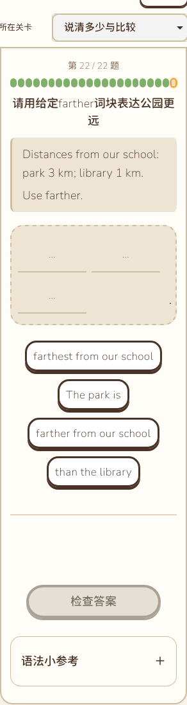
相同满匙轮廓，一满匙加半匙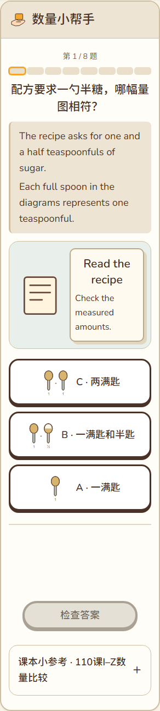
三个同尺度量杯100／200／300 ml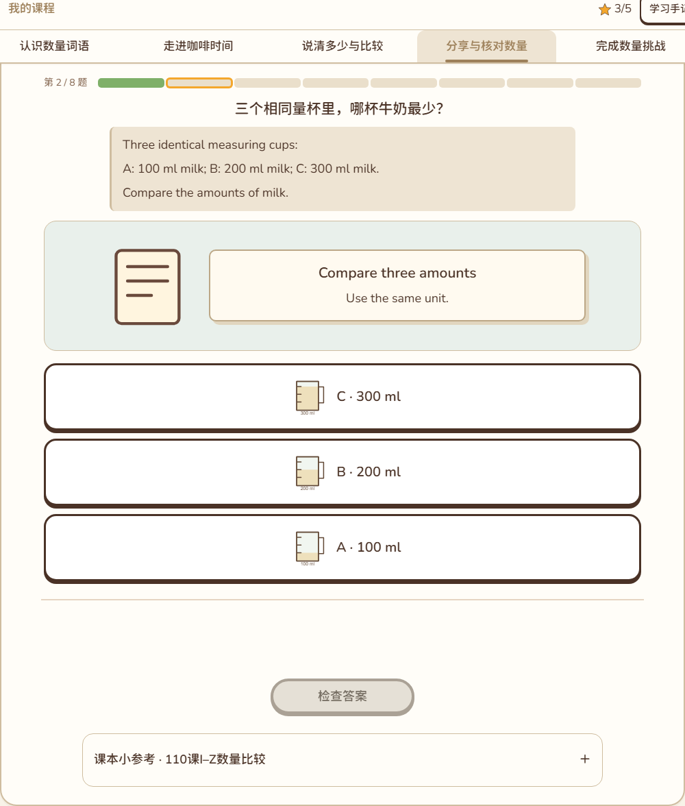
手机形式关系组保留完整英文词及I–Z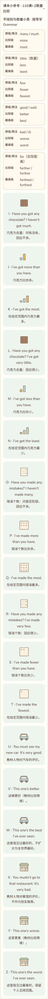
短屏三卡并排，操作可达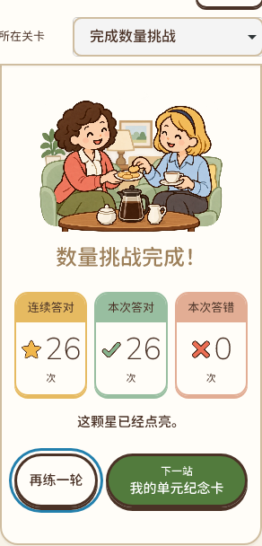
末组自然5张词卡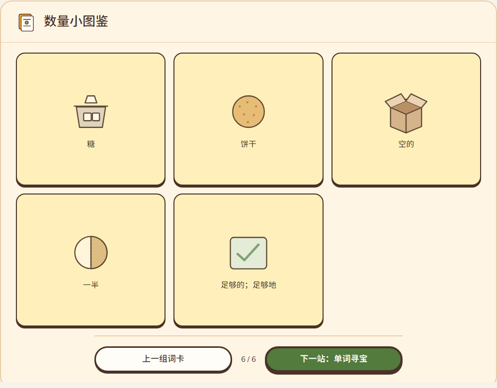
完整A4／B6／C6／D6，共34行匹配实际产出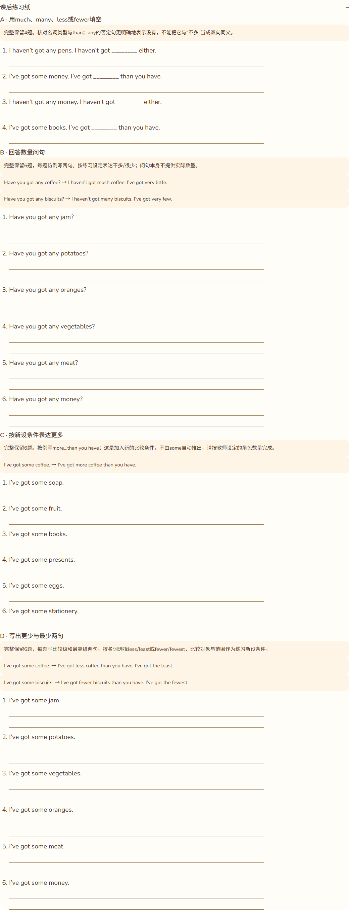
测试账号手机五星卡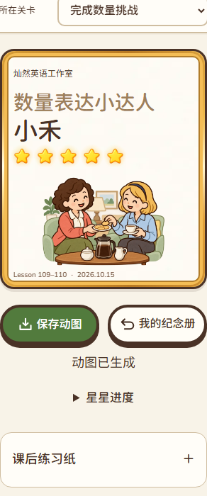
测试账号实际五星GIF第15帧真实账号纪念册放大卡长姓名手机卡，不越界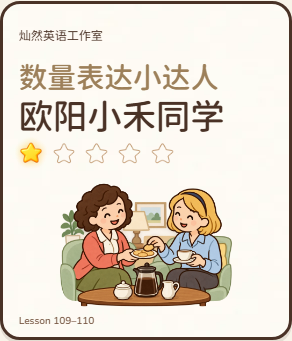
同姓名一星比较 Lesson 1-2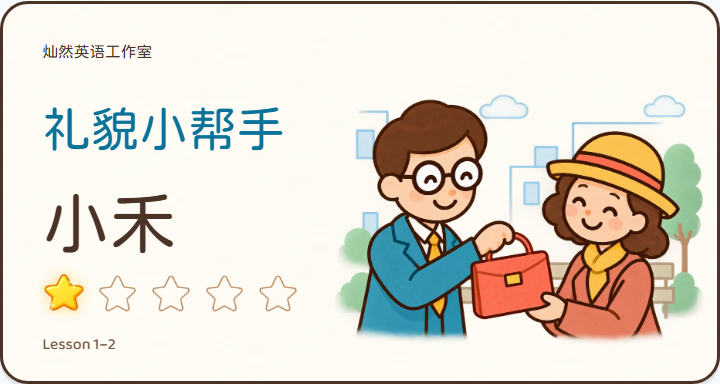
同姓名一星比较 Lesson 3-4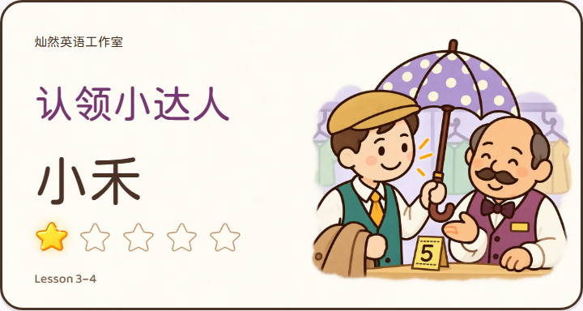
同姓名一星比较 Lesson 5-6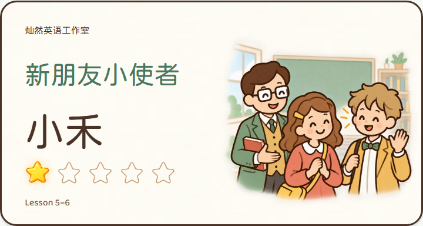
同姓名一星比较 Lesson 109-110实际一星动图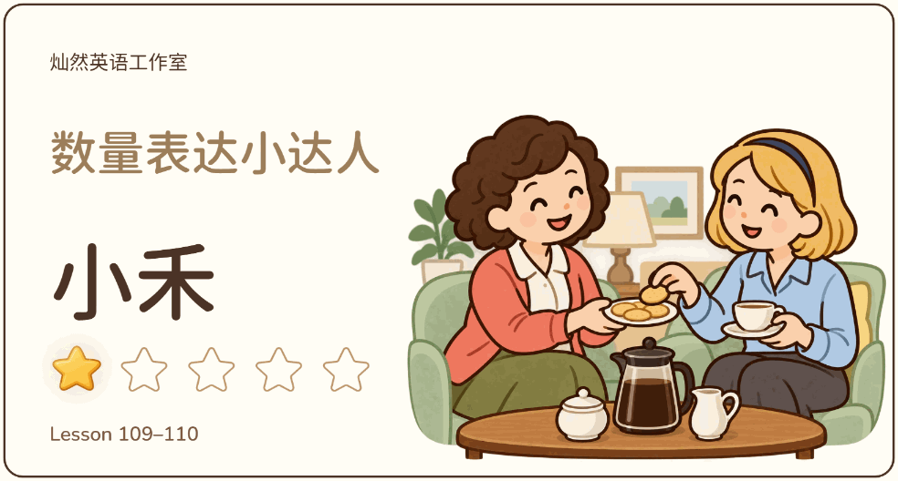
实际五星动图